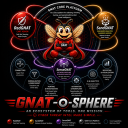

Network Profiling & Behavioral Analysis
Surface anomalies. Enrich investigations. Close the traffic-layer gap.
Indicator matching tells you what you already know is bad. Behavioral profiling tells you what is behaving badly — regardless of whether an indicator for it exists yet.
SenseGNAT adds what indicator feeds can't: the behavioral picture of what's happening on the wire, in the context of what's known to be normal for your specific environment.
Periodic outbound connections inconsistent with the host's established baseline. C2 traffic before the domain is in any feed.
Unexpected east-west traffic patterns — hosts communicating in ways that deviate from their normal peer groups.
Rare or unusual protocol usage from hosts that have no established pattern for that protocol.
Data exfiltration patterns: unusual outbound volumes, off-hours transfers, compressed transfer windows.
First-seen destinations, freshly registered domains, IP ranges with no prior relationship to your environment.
Hosts whose traffic profile diverges from their peer group — workstations behaving like servers, servers acting like endpoints.
gnat.telemetry topic